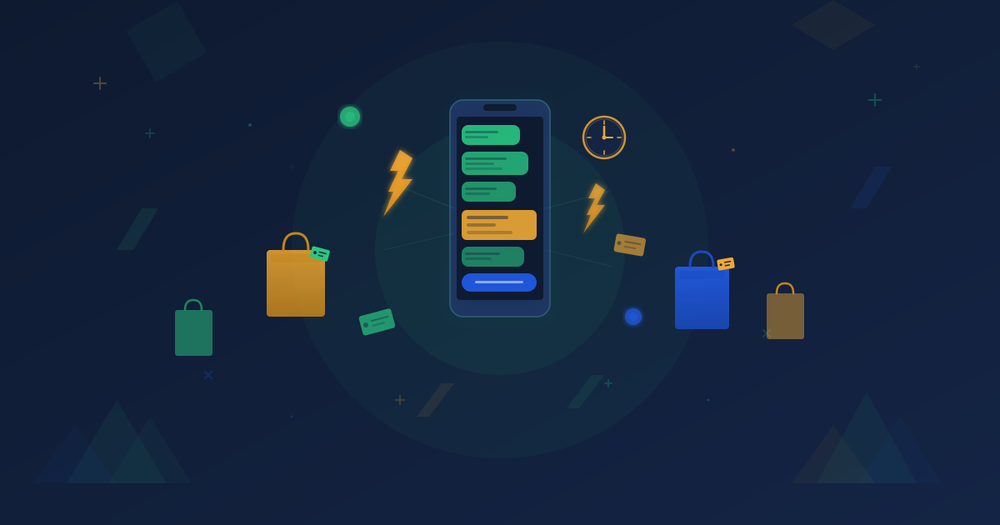
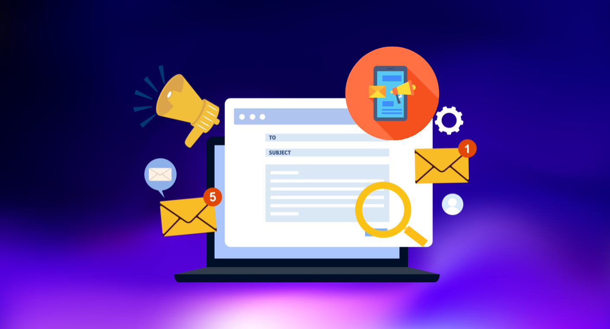

ในโลกของการตลาดที่เต็มไปด้วยการแข่งขัน การเข้าถึงกลุ่มเป้าหมายไม่ใช่แค่การยิงโฆษณาหว่านแหอีกต่อไป แต่คือการทำ Data-Driven Marketing หรือการตลาดที่ใช้ข้อมูลเป็นตัวขับเคลื่อนเพื่อส่งมอบข้อความที่ใช่ในเวลาที่เหมาะสม และช่องทางที่มีประสิทธิภาพที่สุด หนึ่งในเครื่องมือที่ดูเหมือนเรียบง่ายแต่ทรงพลังที่สุดในยุคดิจิทัล คือ SMS Gateway ซึ่งเข้ามาเป็นสะพานเชื่อมต่อข้อมูล (Data) ไปสู่มือลูกค้าโดยตรง
SMS Gateway คืออะไร?

SMS Gateway คือระบบที่เป็นตัวกลางในการเชื่อมต่อระหว่างระบบซอฟต์แวร์หรือแพลตฟอร์มของธุรกิจ เข้ากับเครือข่ายโทรคมนาคม ทำให้ธุรกิจสามารถส่งข้อความสั้น (SMS) จำนวนมากได้จากคอมพิวเตอร์หรือระบบอัตโนมัติ (API) ไปยังโทรศัพท์มือถือของลูกค้าปลายทางได้ทันที โดยไม่ต้องกดส่งทีละเครื่อง
ทำไม SMS Gateway ถึงสำคัญต่อ Data-Driven Marketing?
การทำ Data-Driven Marketing หัวใจสำคัญคือการนำข้อมูลพฤติกรรมลูกค้า (Customer Data) มาวิเคราะห์เพื่อแบ่งกลุ่ม (Segmentation) และทำ Personalization ซึ่ง SMS Gateway เข้ามาเติมเต็มส่วนนี้ด้วยเหตุผลดังนี้
1. อัตราการเปิดอ่านสูงที่สุด (Highest Open Rate)
จากการสถิติทั่วโลก SMS มีอัตราการเปิดอ่าน (Open Rate) สูงถึง 98% ภายในเวลาไม่กี่นาทีหลังจากได้รับ ซึ่งสูงกว่าอีเมลหรือการแจ้งเตือนในโซเชียลมีเดียหลายเท่า นี่คือช่องทางที่การันตีว่าข้อความของคุณจะถูกมองเห็นแน่นอน
2. การสร้าง Personalization ที่แท้จริง
เมื่อคุณมีข้อมูลลูกค้าในฐานระบบ (Database) คุณสามารถส่ง SMS ที่ปรับแต่งเนื้อหาให้ตรงกับบุคคลนั้นได้ เช่น "สวัสดีคุณ [ชื่อลูกค้า] พบสินค้าที่ชอบในรถเข็นของคุณ..." ซึ่งข้อความที่มีความเฉพาะเจาะจงจะสร้างความรู้สึกใส่ใจและเพิ่มโอกาสในการปิดการขายได้มากกว่าข้อความหว่านทั่วไป
3. ระบบอัตโนมัติด้วย Trigger-Based Marketing
ในยุค Data-Driven ระบบของคุณสามารถตรวจจับเหตุการณ์ (Trigger) ได้ เช่น
- Cart Abandonment — ลูกค้าทิ้งสินค้าไว้ในตะกร้า ส่ง SMS เตือนพร้อมคูปองส่วนลด
- Order Update — แจ้งสถานะการจัดส่งแบบ Real-time
- Loyalty Reward — ส่งคะแนนสะสมหรือโปรโมชั่นวันเกิดโดยอัตโนมัติ
กลยุทธ์การเชื่อมต่อ SMS Gateway ให้เกิดประสิทธิภาพสูงสุด

เพื่อให้การใช้ SMS Gateway สอดคล้องกับกลยุทธ์ Data-Driven คุณควรคำนึงถึง 3 ปัจจัยหลัก
- Segmentation — อย่าส่งข้อความเดียวให้ทุกคน ให้แบ่งกลุ่มลูกค้าตามพฤติกรรม เช่น กลุ่มที่ซื้อบ่อย, กลุ่มที่เงียบหายไปนาน, หรือกลุ่มที่สนใจสินค้าหมวดหมู่เฉพาะ
- Timing — ใช้ข้อมูลเวลาที่ลูกค้ามักจะออนไลน์หรือซื้อสินค้าเป็นตัวตั้ง เพื่อส่ง SMS ในช่วงเวลาที่ลูกค้ามีโอกาสตอบสนองมากที่สุด
- Call to Action (CTA) — ข้อความต้องสั้น กระชับ และมีลิงก์ที่ชัดเจนให้ลูกค้ากดต่อทันที เช่น ลิงก์ไปหน้าชำระเงิน หรือหน้าสินค้าที่แนะนำ
สรุป: อนาคตของ SMS ในยุค Data-Driven
แม้จะมีช่องทางสื่อสารใหม่ ๆ เกิดขึ้นมากมาย แต่ SMS Gateway ยังคงเป็นช่องทางที่มีอำนาจการสื่อสารสูงที่สุด เพราะสามารถเข้าถึงลูกค้าได้โดยตรง (Direct Access) ไม่ต้องพึ่งพาอัลกอริทึมของแพลตฟอร์มโซเชียลมีเดีย ดังนั้นการลงทุนในระบบ SMS Gateway จึงไม่ใช่แค่เรื่องของการส่งข้อความ แต่คือการลงทุนใน "โครงสร้างพื้นฐานด้านการสื่อสาร" ที่จะช่วยให้ธุรกิจของคุณเชื่อมต่อกับลูกค้าได้อย่างแม่นยำ รวดเร็ว และสร้างยอดขายได้อย่างเป็นรูปธรรมในยุค Data-Driven Marketing